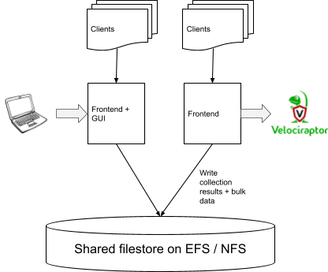
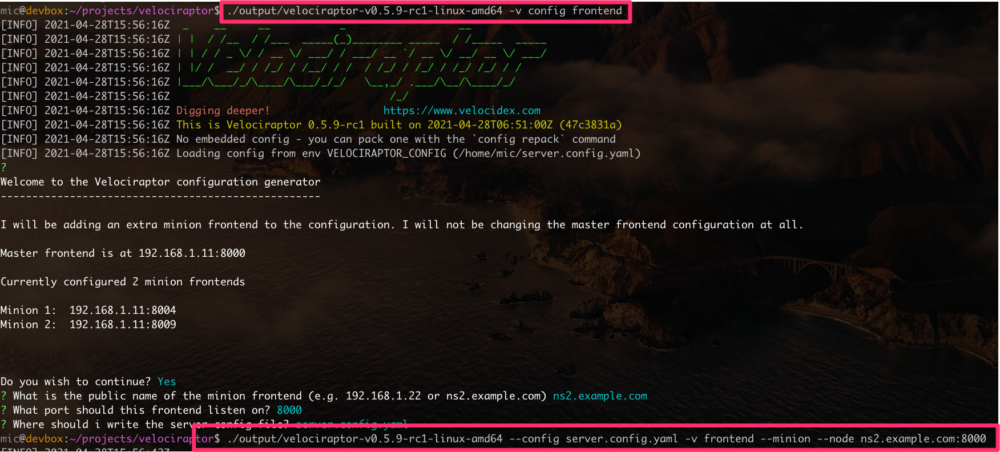

Velociraptor is an endpoint visibility tool designed to query a large number of endpoints quickly and efficiently. In previous releases, Velociraptor was restricted to a single server performing all functions, such as serving the GUI, the gRPC API as well as connections to the clients (endpoint agents). While this architecture is regularly used to serve up to 10k-15k endpoints, at high number of endpoints, we are starting to hit limitations with the single server model.
This post introduces the new experimental multi-server architecture that is released in the 0.5.9 release.
If you have ever used Velociraptor on a small network of endpoints (say between 2k-5k endpoints), you would be accustomed to a snappy GUI, with the ability to query any of the currently connected endpoints instantly. Velociraptor clients typically do not poll, but are constantly connected to the server— this means that when tasking a new collection on an endpoint, we expect it to respond instantly.
As the number of endpoints increase this performance degrades. When forwarding a large number of events from the end points, or performing hunt that transfer a lot of data, one might experience sluggish performance.
However, Velociraptor is designed to operate reliably even under loaded conditions. Velociraptor maintains server stability under load by employing a number of limits:
Concurrency — This setting controls how many clients will be served at the same time. Typically clients upload their responses (JSON blobs or bulk file data) in HTTP POST up to 5mb in size. Since it takes a certain amount of memory to serve each client at the same time, without concurrency control it is difficult to control total server memory usage.
Load shedding — The server accepts client connections up to a certain rate (QPS limit). Above this rate, the server will refuse to connect, causing clients to back off and retry the connection later. This approach maintains server stability by spreading client uploads over time and capping the total client connections the server is seeing at each point in time.
Hunt client recruitment limits — Velociraptor limits the rate at which endpoints are assigned to a hunt (By default 100 per second). This therefore limits the rate at which responses come back and has the effect of spreading load over time.
These limits are designed to keep the server responsive and stable, but at high load they result in undesirable degradation of performance — in particular GUI performance suffers. Due to Golang’s fair scheduling algorithm, GUI requests are scheduled at the same priority as client requests — so as client number increases, the GUI become less responsive.
The natural solution to the scale problem is to add more frontend servers, so that each frontend server handles a fraction of the clients. To understand what is required for a multi frontend design, let’s consider the main tasks of the frontend:
TLS encryption — Frontends need to encrypt and decrypt client communication using TLS. This is a CPU intensive operation (This cost can be limited to some extent by using TLS offloading), which will benefit from multiple servers.
Distribute new work for clients — Since clients are constantly connected we need a way to notify a given frontend that new work is available for a client. A client may be connected to any frontend server, so we need a good way to notify all servers there is new work.
Receive query results from clients — Each frontend needs to receive the results and store that in the backend storage solution. The results of a query may be a row-set (i.e. JSONL files) or bulk upload data. We need a good distributed storage solution that can be accessed by multiple servers.
Receive events from the client and potentially act on them — Clients can run monitoring queries, forwarding real time information about the endpoint. These events may trigger further processing on the server (e.g. upload to Elastic). We need a good way to replicate these events between servers.
Currently Velociraptor’s data store consists of flat files stored on the local disk. Since Velociraptor is primarily a collection tool, flat files work well. However, having files on the local disk means that it is impossible to share the datastore between multiple frontends running on different machines.
Previously, Velociraptor featured an experimental MySQL backend to store data. This solved the problem of distributing the data between frontends, by having all frontends connect to a central MySQL server. However, in practice the additional overheads introduced by the MySQL abstraction resulted in major performance degradation, and this data store was deprecated.
A more direct way to share files between multiple machines is via NFS or on AWS, EFS (Google has a similar product called Filestore). This works very well and is a great fit for the Velociraptor data access pattern:
Frontends always append to files, generally file data is not modified after writing (Think of a VQL Query results set — these are simple JSONL files that are written in chunks but never modified once written)
The same file is never written by multiple frontends at the same time — each file exists within the client’s path and therefore is only accessed by one client at the time. Since a client is only connected to a single frontend, there is no need for complicated locking schemes.
The result is that Velociraptor’s data store is truly lock free, and therefore we do not need to worry about NFS file locking (which is often complicated or not implemented).
Additionally, cloud providers offer highly scalable NFS services with essentially unlimited storage and very high IO bandwidth. This makes it operationally easier to manage storage requirements (We often run out of disk space when using a fixed disk attached to a virtual machine). Additionally, EFS is changed per usage so it is easier to budget for it.
So if we simply run multiple frontends on different machines, load balance our clients to these frontends, and have all separate frontends simply write to the same shared NFS directory, this should work?
Not quite! Consider the following simple scenario, where multiple frontends are all sharing the same data store:

The admin browser (on the left) is connected to the GUI on one frontend, and is tasking a new collection from a client which happened to be connected to another frontend (on the right). There is no way to tell that client there is new work for it. Remember that Velociraptor does not rely on polling, all clients are always connected and can be tasked immediately! So we really need a low latency mechanism to inform the client that new work is available.
In order to facilitate this there has to be a way for frontends to communicate with each other and pass messages with very low latency (i.e. we need a message passing architecture). The GUI needs to simply message all frontends that a new collection is scheduled for a particular client, and the one frontend which presently has that client connected will immediately task it.
The latest release (0.5.9) features a multi frontend architecture. To simplify the message passing design, we designate one frontend as the Master and the other servers as the Minions. Velociraptor implements a simple steaming gRPC based replication service — replicating messages from each minion server to the master and from the master to all minion servers.
Minions receive events from the Master and generate events to send to the master, while the Master brokers all messages between minions. The Master node also runs the GUI and some other services, but the bulk of the client communication and collection is handled by the Minions.
Note that in this architecture, the GUI is running on a single frontend, and the number of clients handled by it can be reduced, keeping the GUI particularly responsive.
In order to spread the load evenly between the multiple frontends, it is possible to use a load balancer in front of all the frontends.
As an alternative, it is possible to allow the Velociraptor clients themselves to load balance by providing multiple frontend URLs within the clients’ configuration. Clients will pick a frontend in random and rotate through the frontends randomly. This should result in relatively even distribution of clients between all the frontends.
The upcoming 0.5.9 release uses command line arguments to control the type of frontend. By default a frontend will be started as a master, starting all services including the GUI in process. This is exactly the same behavior as the previous single frontend architecture so it should not affect existing users.
In order to allow minion frontends to connect one must:
Mount the EFS or NFS directory on both master and all minion servers adjusting the Datastore.location path in the configuration file if needed.
Add a new frontend using the velociraptor config frontend command
In order to start a minion frontend, one must specify the minion flag and the name of the node (the name consists of the dns name of the frontend followed by the port). The process is illustrated below.

The new architecture is still experimental but shows great promise to be able to scale Velociraptor to the next level. We need contributions from the community with polishing the new architecture and making it easier to deploy in wide deployment scenarios (for example Terraform templates, or docker files).
If you would like to contribute to this effort, take Velociraptor for a spin! It is a available on GitHub under an open source license. As always please file issues on the bug tracker or ask questions on our mailing list velociraptor-discuss@googlegroups.com . You can also chat with us directly on discord https://www.velocidex.com/discord